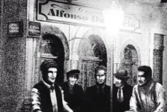

História do corinthians
Por: Guilherme Vargas
PO Sport Club Corinthians Paulista foi fundado no dia 1 de setembro de 1910, no bairro do Bom Retiro, na cidade de São Paulo. A história do clube começou quando um grupo de operários, formado majoritariamente por pintores, carpinteiros e alfaiates, assistiu a uma partida do Corinthian, um time inglês que realizava uma turnê pelo Brasil. Inspirados pelo estilo de jogo ofensivo e pela garra daquela equipe estrangeira, eles decidiram que criariam o seu próprio time de futebol. A primeira reunião oficial ocorreu sob a luz de um lampião na Rua José Paulino, e Miguel Battaglia foi escolhido como o primeiro presidente do clube, marcando a ocasião com a famosa profecia de que o Corinthians seria o time do povo e que o povo faria o time. O nome foi uma homenagem direta ao clube inglês que serviu de inspiração, e as cores originais eram o bege e o preto, que posteriormente evoluíram para o branco e preto tradicionais. O primeiro jogo da história do clube aconteceu em 14 de setembro de 1910 contra o extinto Esperança, e embora tenha terminado em derrota, marcou o início da trajetória de uma equipe que nasceu para quebrar as barreiras de um esporte até então elitista, consolidando-se rapidamente como o time do povo. s